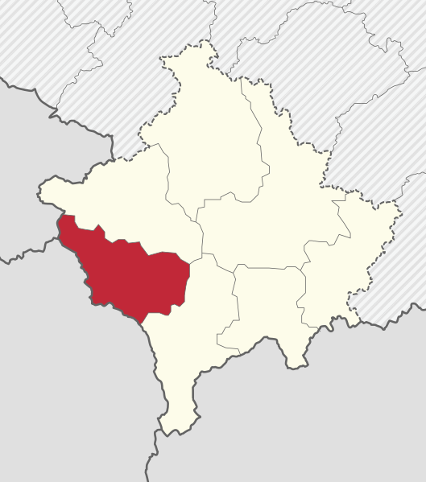
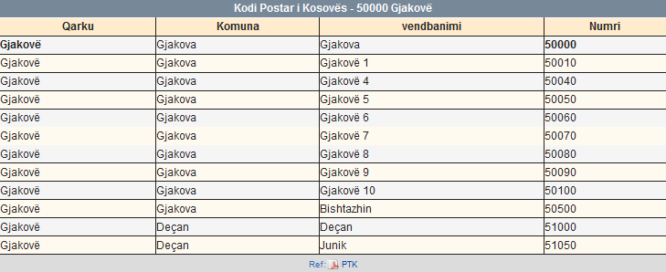
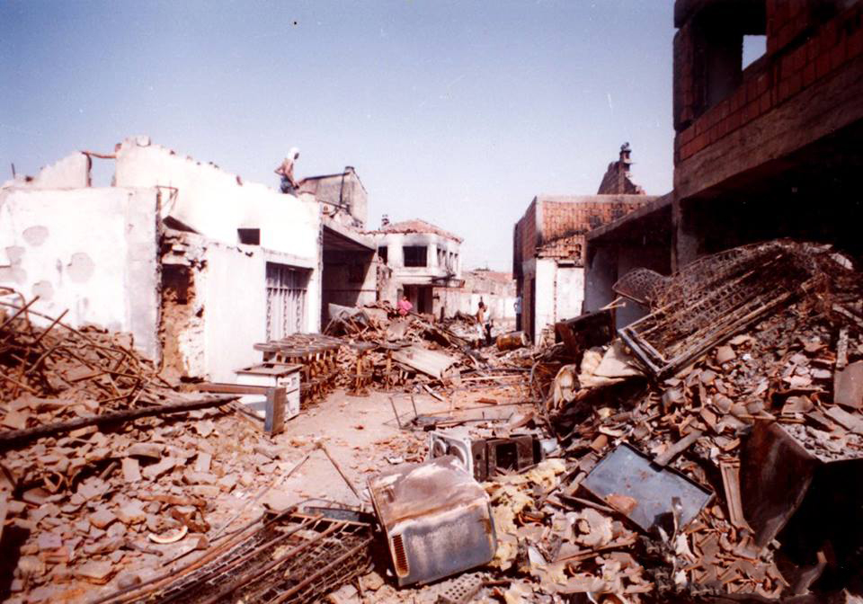

Gjakova është një qytet dhe komunë që ndodhet në Rrethin e Gjakovës në
Kosovën perëndimore. Sipas regjistrimit të vitit 2011, qyteti i Gjakovës ka 40.827 banorë, ndërsa komuna ka,
94.556 banorë.
Gjeografikisht, ajo është e vendosur në pjesën jug-perëndimore të Kosovës , rreth gjysmës së rrugës ndërmjet
qyteteve të Pejës dhe Prizrenit . Isshtë afërsisht 100 km (62 mi) në brendësi nga deti Adriatik . Qyteti
ndodhet rreth 208 kilometra në veri-lindje të Tiranës , 145 kilometra në veri-perëndim të Shkupit , 80
kilometra në perëndim të kryeqytetit Prishtinë , 435 kilometra në jug të Beogradit dhe 263 kilometra në
lindje të Podgoricës .
Qyteti i Gjakovës ka qenë i populluar që nga epoka parahistorike. Gjatë periudhës otomane , Gjakova shërbeu
si qendër tregtare në rrugën ndërmjet Shkodrës dhe Stambollit .
Ishte gjithashtu një nga qendrat më të zhvilluara tregtare në atë kohë në Ballkan .
Gjeografia

Gjakova ndodhet në pjesën jug-perëndimore të Kosovës . Në veri-lindje të qytetit, hapet fusha
perëndimore kosovare e Dukagjinit , ndërsa në jug-perëndim rritet maja e Alpeve Dinare. Qyteti është
vendosur gjithashtu në hyrje të Luginës së Erenik , ku lumi Krena rrjedh nga veriu në rrjedhën malore
Erenik. Pas disa kilometrash, ajo derdhet në Drinin e Bardhë , lumi më i gjatë në Kosovë. Komuna
mbulon një sipërfaqe prej 521 km 2 , përfshirë qytetin e Gjakovës dhe 84 fshatra.
Ekonomia e Gjakoves
Zanafillët e ekonomisë së qytetit duket të jenë në fushat dhe kullosat e fshatarëve si dhe këmbimi i
tyre para formimit të qendrës tregtare në fushën e Jakovës. Ndërsa kjo qendër ngritët në qendër
rajonale rreth viteve 1594/1595, vite të cilat merren edhe si vite të themelimit të qytetit. Kështu që
rreth vitetve 1660, në qende të qytetit kishte lulëzuar hoteleria si dhe dyqanet në të cilat bëhej
edhe finalizimi i produkteve të ndryshme të kohës, me të cilat i mbulonin kërkesat e tregut në hapësirën
e Gjakovës si dhe të rrethnës së saj. Më vonë, nga prodhimet e daluara nga ekonomia e Gjakovës
mbulohej edhe tregu i malësi së Gjakovës. Gjatë kohës së Rilindjes, qyteti kishte të zhvilluar disa degë
të ekonomisë feudale ndërsa tregtia zhvillohej në rreth 1.000 dyqane. Gjatë kësaj kohe përmendet
sistemi ekonomik i esnafe. Në vitet pas luftës së dytë botërore, ekonomia kishte rënë dhe dominonte
ekonomia e kontrabandës. Me përforcimin e sistemit të vendosur Jugosllavë, diku para viteve 60 të
shekullit të kaluar, sidomos pas kalimit të kohës së shtetzimit dhe serbizimit të pronave shqiptare,
të quajtura nga komunistët si reforma agrare dhe sidomos pas viteve '68 të shekullit të kaluara, plani
ekonomik i qytetit fillon të pregatitet. Plani i pregatitur fillon të zbatohet në praktik pas vitit
1974. Kështu ekonomisë së Gjakovës ërpos industrializimit të degëve ekzistuese i shtohen edhe disa degë
të reja siq është p. sh. : industria e metaleve, industria e tekstilit etj. Mirëpo ky zhvillim
fillon të ngecë pas vitit 1981 dhe të ndërprehet plotësisht pas vitit 1985. Pas këtij viti fillon ngecja
e plotë dhe pas futjes së masave të dhunëshme nga qeveria e Serbis fillon shkatrrimi i ekonomis.
Historia
Xhamia dhe emri i qytetit Në bazë të defterit të vitit 1571, Gjakova ishte ende fshat, ishte qendër
pazari. Me një status të këtillë, ajo jetoi deri më 1582. Dhjetë vjet më vonë, prej 68 familjesh
shqiptare, sa kishte atëherë Gjakova, 13 ishin të islamizuara e të tjerat të krishtera. Gjakova si fshat
i reduktuar me qendër të vogël, kryente funksionin e tregut lokal. Ky treg lokal ishte një specifikë
për Gjakovën si dhe qytetet shqiptare gjatë shekullit XV, deri në fillim të atij XVI. Është me interes
të ceket se specifika e zënë ngojë, nuk ishte karakteristike për qytetet e Perandorisë Turko-osmane.
Në atë periudhë, në mbarim të shekullit XVI, konkretisht në vitin 1594/95, Hadum Sylejman Efendia-Hadum
Aga ndërtoi xhaminë, e cila po ashtu edhe mban emrin e donatorit-financuesit të objektit në Gjakovë.
Xhamia e Hadumit, sipas traditës, u ndërtua në fushën e Jakë Vulës, prej nga edhe do të bëhej emërtimi i
qytetit - Jakovë.
Kodi Postar
5000

Lufta dhe Pasojat e Luftes
Pas luftës në Kosovë , Kulla e Sahatit të Gjakovës u rivendos, megjithëse në një stil të ndryshëm nga kulla
origjinale.
Veprimet në tokë patën një efekt shkatërrues në qytet. Sipas ICTY , OSBE, dhe organizatave ndërkombëtare për
të drejtat e njeriut, rreth 75% e popullsisë u dëbua nga policia dhe paramilitarët serbë si dhe forcat
jugosllave, ndërsa shumë civilë u vranë në proces. Zonat e mëdha të qytetit u shkatërruan, kryesisht përmes
zjarrvënies dhe plaçkitjes, por edhe gjatë luftimeve të lokalizuara midis forcave të sigurisë qeveritare
dhe pjesëtarëve të ULAK-së. Aksionet e forcave qeveritare në Gjakovë formuan një pjesë të madhe të aktakuzës
së Kombeve të Bashkuara për krime lufte të Presidentit të atëhershëm Slobodan Milošević]Në vitin 2011,
disa dhjetëra kufoma u identifikuan dhe u kthyen në familjet e tyre, megjithëse numri është relativisht
i vogël në krahasim me shifrat e atyre që ende mungojnë.
Pasojat e luftës në Kosovë

Shumica e popullsisë shqiptare u kthye pas përfundimit të luftës. Në 2001 u mbajtën zgjedhjet e lira, me
një shumicë të fituar nga LDK. Mijëra dyqane të reja u rindërtuar. Qyteti i vjetër është një shembull i
mirë ku qindra dyqane u shkatërruan gjatë luftës; në 2001 aq sa u rindërtuan sa kishte pasur përpara luftës.
U lançuan mediat e reja televizive dhe radiofonike si Radio Gjakova, Radio Pandora, Radio Amadeus dhe TV
Syri. Bizneset lokale krijojnë ndërmarrje prodhuese siç është fabrika e tullave IMN.